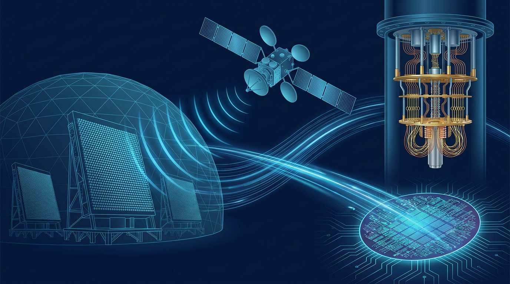
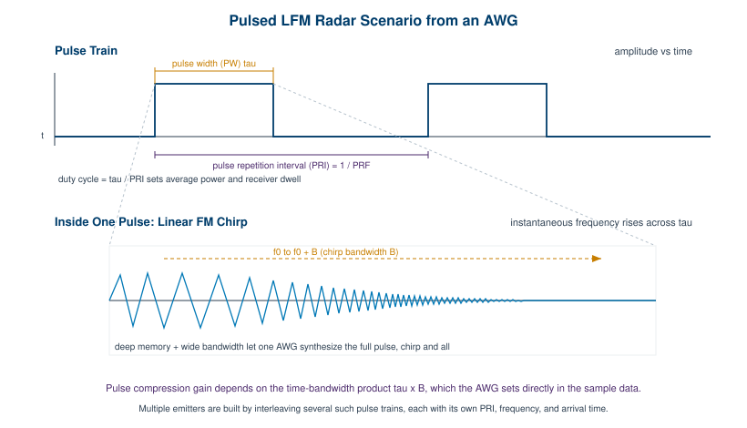
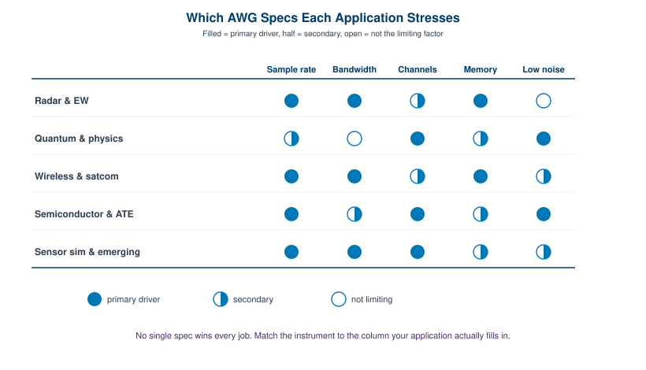

Section 3 · Applications, Selection, and Reference
Chapter 8: Applications

The first two sections built the instrument from the ground up. You know how an AWG works, what its specifications mean, and how to turn an idea into a clean output. This final section turns outward. It asks where all of that capability actually gets used, how to choose the right instrument for a given job, and where to look things up when you are back at the bench.
Chapter 8 surveys the applications: radar and electronic warfare, quantum computing, wireless and satellite test, semiconductor and component test, and the growing list of sensor-simulation uses. Chapter 9 turns that survey into a selection method, a structured way to map your requirements onto real instruments. Chapter 10 collects the practical performance tips and reference tables that experienced users keep close. Chapter 11 closes the book with the Berkeley Nucleonics AWG family and where each model fits.
The thread running through this chapter is simple. Every application leans hard on a different subset of the specifications you studied in Chapter 3. Radar wants bandwidth and memory. Quantum work wants channels, timing, and quiet. Knowing which spec your problem actually stresses is the difference between buying the right instrument and overpaying for the wrong one.
An arbitrary waveform generator is a general-purpose tool that earns its living in highly specialized places. The reason is consistent across every field that uses one. Real systems have to be tested against signals that are too complex, too precise, or too dangerous to capture in the wild on demand. A radar receiver needs to see threats that may not exist yet. A qubit needs a control pulse shaped to a fraction of a nanosecond. A 5G base station needs a waveform that is broken in a known, repeatable way. The AWG supplies all of these by playing back samples, which means any signal that can be described as numbers can be produced, measured against, and reproduced exactly tomorrow.
This chapter walks through five application areas. For each one, the goal is concrete: what the AWG actually generates, which specifications matter most, and what gets tested as a result. By the end you should be able to look at a new problem and predict which column of the specification sheet it will stress.
8.1 Radar and Electronic Warfare
Radar and electronic warfare (EW) are the classic high-end AWG application, and they remain the most demanding. The instrument is asked to generate radar pulses, the linear frequency modulated (LFM) chirps inside those pulses, and entire multi-emitter threat environments where many signals overlap in time and frequency. These waveforms then drive a receiver, an electronic support measures (ESM) system, or a radar warning receiver so that engineers can verify it detects, classifies, and reacts correctly before anything flies.
What the AWG generates. Start with a single pulse. It has a carrier frequency, a pulse width, and a pulse repetition interval (PRI), the spacing between pulses. Inside the pulse, the carrier is usually modulated, most often as an LFM chirp that sweeps linearly from one frequency to another. That chirp is what gives modern radar its pulse-compression range resolution, and the compression gain depends on the time-bandwidth product of the pulse. Build several such pulse trains, each with its own frequency, PRI, and timing, interleave them, and you have a multi-emitter scenario that looks like a crowded, hostile sky.

Which specs matter. Three dominate. Wide bandwidth comes first, because modern radar and EW signals occupy hundreds of megahertz to several gigahertz, and the AWG must cover the chirp bandwidth and the carrier in real time or as an upconverted band. Deep memory comes second, because a realistic threat scenario is long and varied, and playing it without obvious repetition demands a large sample budget. Multi-channel operation comes third, because phased-array work and angle-of-arrival testing need several outputs that stay phase-coherent. A phased array steers its beam by applying precise phase offsets across its elements, and to test the electronics behind it you feed each element a copy of the signal with a controlled phase, which only synchronized channels can deliver.
Engineer's corner. The hardest part of EW scenario generation is rarely a single waveform. It is keeping a long, dense environment from looping audibly. A receiver under test that is smarter than your scenario will lock onto the repetition period and flag it. Deep memory buys you a longer non-repeating window, and good sequencing lets you stitch segments so the seams do not line up. Plan the memory budget around the longest dwell you need to defeat, not the average.
What gets tested. Receiver sensitivity, the ability to detect a weak pulse buried in noise. Pulse classification, the ability to sort emitters by their parameters. Reaction time, how quickly the system responds once a threat appears. And dynamic range, whether a strong nearby emitter blinds the receiver to a weak distant one. All of these need a stimulus that is both realistic and known, which is exactly what a memory-based generator provides.
8.2 Quantum Computing and Physics
Quantum computing has become one of the most exacting AWG applications, and it stresses a very different set of specifications than radar does. Here the AWG generates the shaped control pulses that manipulate qubits. A superconducting qubit is driven by microwave pulses, often pre-shaped as Gaussian or DRAG envelopes to suppress leakage into unwanted energy levels. A trapped-ion qubit is addressed with precisely timed radio-frequency and laser-control signals. In both cases the pulse shape, amplitude, and phase determine whether a gate operation succeeds or quietly corrupts the computation.
Which specs matter. Channel count and synchronization dominate. A useful quantum processor has many qubits, each needing one or more control and readout lines, so the AWG must provide many channels that share a common clock and start together. Timing and skew are the next constraint. The relative delay between channels must be controlled to picoseconds, because a two-qubit gate depends on two pulses arriving in a precise temporal relationship. Low noise is the third. Every millivolt of spurious noise on a control line is a small rotation error on the qubit, and those errors accumulate across a deep circuit. Sample rate and bandwidth matter too, but they are usually in service of clean, well-defined pulse edges rather than raw frequency reach.
Pro tip. In multi-qubit work, channel-to-channel skew is the spec that quietly limits your gate fidelity long before noise does. Measure it directly with a fast scope rather than trusting the datasheet number across your exact cable set. A few extra picoseconds of mismatch on one line, added by a longer cable run, can be the difference between a calibrated gate and one that needs constant re-tuning.
What gets tested, and where else this shows up. The qubits themselves, in the sense that the AWG is part of the control stack rather than the device under test. The same demands appear across experimental physics. Nuclear magnetic resonance (NMR) spectroscopy uses shaped RF pulse sequences to manipulate nuclear spins, and the quality of the spectrum depends directly on pulse fidelity. Particle physics, optics, and ultrafast laser experiments lean on AWGs for the same reason: when an experiment hinges on a signal that must be exactly shaped and exactly timed, a memory-based generator is the natural source.
8.3 Wireless and Satellite Communications
Wireless and satellite communications testing is where AWGs meet the modern modulated waveform head-on. The instrument generates baseband and IQ signals for standards like 5G NR, Wi-Fi, and satellite communications (satcom). It produces the in-phase and quadrature (I and Q) components that, once upconverted, become the complex modulated carrier the standard defines. Two synchronized channels feed an external IQ modulator, or a wideband single channel produces the signal directly at an intermediate frequency.
Which specs matter. Sample rate and bandwidth lead, because modern standards are wide. A 5G NR channel can occupy 100 MHz or more, and producing it cleanly needs sample rate well above twice that, with bandwidth to match. Memory matters for long, statistically realistic test sequences and for captured-environment playback. Channel count matters for IQ pairs and for multiple-input multiple-output (MIMO) work, where several spatial streams must be generated coherently. Noise and spectral purity matter because the test signal must be cleaner than the receiver you are trying to characterize, or you cannot tell the receiver's flaws from your own.
What gets tested. Two complementary jobs. First, standard-compliant generation, where the AWG produces a textbook-perfect waveform to confirm a receiver meets the specification. Second, and often more revealing, impaired-signal generation. Here you deliberately add known impairments, IQ imbalance, phase noise, frequency offset, fading, or interference, and watch how the receiver copes. A receiver that passes on a clean signal but falls apart under a 2 percent error vector magnitude has told you something a compliance test never would. The AWG also shines at wideband scenario playback, replaying a recorded RF environment so a one-off field failure becomes a repeatable bench test.
8.4 Semiconductor and Component Test
Semiconductor and component test is the high-volume, high-throughput end of the AWG world. The instrument supplies precise, repeatable stimulus to characterize devices: analog-to-digital converters (ADCs) and digital-to-analog converters (DACs), high-speed serial links, automotive sensors, and discrete components inside automated test equipment (ATE). The defining demand here is not a single exotic waveform. It is precision and repeatability delivered fast enough to keep a production line moving.
Which specs matter. Sample rate and amplitude accuracy lead, because characterizing a data converter means presenting it with a stimulus whose properties are known to better resolution than the device itself. To measure an ADC's effective number of bits, the test tone must be cleaner than the ADC. Bandwidth matters for serial-link and high-speed work. Channel count matters when a single test handles multiple device pins or differential pairs at once. Above all, throughput matters: in ATE, every millisecond of test time is multiplied by millions of parts, so fast waveform switching and tight sequencing translate directly into cost.
Engineer's corner. In ATE the spec that pays for itself is not peak performance, it is settling and switching time. A generator that produces a beautiful waveform but takes a long time to change between test segments will throttle a whole line. Look at how fast the instrument moves from one waveform to the next under sequencer control, and how repeatable that transition is part to part. That number, multiplied by your volume, is the real cost.
What gets tested. Converter linearity, noise, and dynamic performance. Serial-link integrity, often with deliberately added jitter or stress patterns. Sensor response across temperature and supply conditions. The Berkeley Nucleonics Model 686 is positioned for semiconductor testing, pairing high real-time update rate and wide bandwidth with the synchronized analog and digital lines that complex device characterization tends to require. As always, confirm current specifications against the datasheet at berkeleynucleonics.com before you design a test plan around any number.
8.5 Sensor Simulation and Emerging Uses
The last category is the fastest growing, and it is unified by a single idea: simulating a sensor's input so a system can be tested without the real-world stimulus. Rather than generating a signal a device emits, the AWG generates the signal a device expects to receive, standing in for the physical world.
Automotive radar and lidar emulation is the headline example. An automotive radar sensor expects echoes from cars, pedestrians, and guard rails. An AWG, often paired with a delay-and-Doppler front end, synthesizes those echoes so the sensor and its perception software can be validated against thousands of scripted scenarios in a lab, repeatably, without a test track. Lidar target emulation works on the same principle in the optical domain, generating return pulses with controlled delay and intensity.
Other emerging uses share the pattern. Ultrasound and medical imaging systems are driven and characterized with shaped transducer excitation waveforms. Optical and photonics control uses AWGs to drive modulators and shape optical pulses, where sample rate and bandwidth set the achievable optical signaling rate. Across all of these, the AWG is valued for the same reason it always is: when the stimulus has to be exact, repeatable, and arbitrary in shape, nothing else fills the role as cleanly.

The map above and the table below say the same thing two ways. Match the instrument to the specification your application actually stresses, not to the largest number on the brochure. A radar lab that buys for channel count and a quantum lab that buys for bandwidth will both be disappointed for opposite reasons.
| Application | What the AWG generates | Specs that matter most | What is tested |
|---|---|---|---|
| Radar & EW | Pulses, LFM chirps, multi-emitter scenarios | Bandwidth, deep memory, multi-channel (phase coherence) | Receiver / ESM detection, classification, reaction, dynamic range |
| Quantum & physics | Shaped qubit control pulses; NMR pulse sequences | Channel count, tight timing/skew, low noise | Gate fidelity; spectroscopy and physics experiments |
| Wireless & satcom | Baseband / IQ for 5G NR, Wi-Fi, satcom | Sample rate, bandwidth, low noise, channels (MIMO) | Compliant and impaired-signal receiver test, scenario playback |
| Semiconductor & ATE | Precise repeatable stimulus for ADCs, DACs, serial links, sensors | Sample rate, amplitude accuracy, throughput / fast switching | Converter linearity, link integrity, sensor response |
| Sensor sim & emerging | Emulated radar / lidar echoes, ultrasound, optical control | Sample rate, bandwidth, scenario depth | Sensor and perception-system validation |
Two lessons close the chapter. First, the AWG is rarely the device under test. It is the trusted source that makes everything else testable, which is why its own fidelity has to exceed the system it stimulates. Second, the right instrument is the one whose strongest specification matches your hardest requirement. The next chapter turns that principle into a repeatable selection method.
Check Your Understanding
Five quick questions on this chapter. Your answers save on this device.